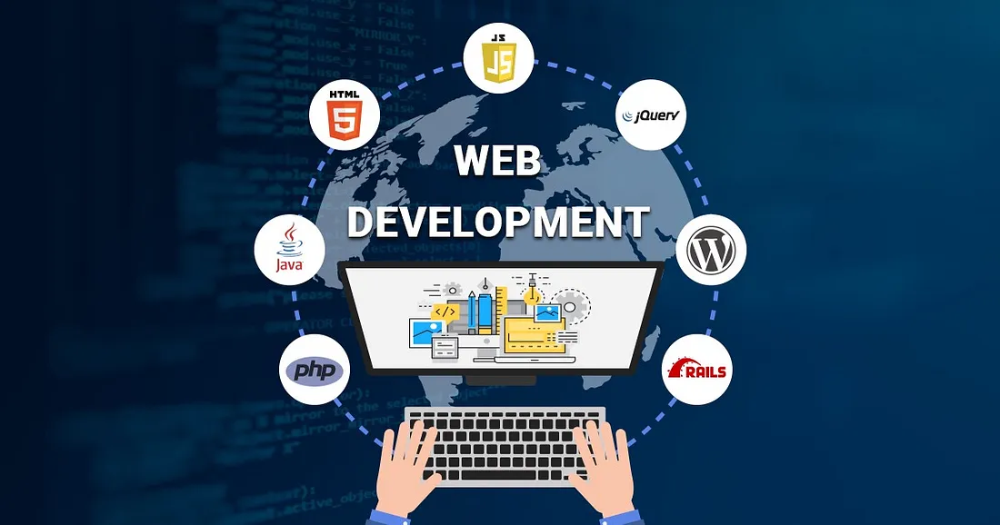

WEB DEVELOPMENT
Our web development services are tailored to meet your business objectives and drive online success. We specialize in custom website development, creating unique and engaging online experiences that resonate with your audience. Whether you need an e-commerce platform to boost sales, a responsive website that looks great on any device, or ongoing maintenance and support to keep your site running smoothly, our team of skilled developers has you covered. We also offer website redesign and optimization services to improve performance and user experience, as well as web application development to streamline your business processes. With our expertise in content management systems, responsive design, and website hosting, we'll ensure your online presence is secure, reliable, and fully optimized for success.
DATA ANALYTICS
Unlock the power of data to drive informed decision-making and gain valuable insights into your business operations with our data analytics services. Our team specializes in collecting, analyzing, and visualizing data from various sources to provide actionable insights that drive growth and efficiency. Whether you're looking to optimize marketing strategies, improve operational performance, or enhance customer experience, our data analytics solutions are tailored to meet your specific needs. From data collection and cleansing to advanced analytics and predictive modeling, we leverage cutting-edge technologies and methodologies to help you harness the full potential of your data. With our expertise in data visualization tools and techniques, we'll transform complex data sets into clear and actionable insights, empowering you to make data-driven decisions with confidence.
DATA ANALYTICS

Empower your business and engage your audience with our comprehensive mobile app development services. Our experienced team of developers specializes in creating custom mobile applications tailored to your specific needs and objectives. Whether you're looking to launch a new app or enhance an existing one, we leverage the latest technologies and industry best practices to deliver seamless and intuitive user experiences across iOS, Android, and hybrid platforms. From initial concept and design to development, testing, and deployment, we'll guide you through every step of the mobile app development process, ensuring a high-quality product that meets your requirements and exceeds your expectations. Whether it's a consumer-facing app, enterprise solution, or IoT integration, we're dedicated to bringing your vision to life and helping you succeed in the mobile marketplace.
CLOUD SERVICES

Leverage the flexibility, scalability, and efficiency of cloud computing with our comprehensive range of cloud services. Whether you're looking to migrate to the cloud, optimize your existing cloud environment, or develop cloud-native applications, our team of experts is here to guide you every step of the way. We offer end-to-end cloud solutions tailored to your specific business needs, from infrastructure as a service (IaaS) and platform as a service (PaaS) to software as a service (SaaS) and hybrid cloud deployments. With our extensive experience in leading cloud platforms such as AWS, Microsoft Azure, and Google Cloud Platform, we'll help you harness the full potential of the cloud to drive innovation, improve agility, and reduce IT costs. From initial strategy and planning to implementation, migration, and ongoing management, we're committed to delivering scalable, secure, and cost-effective cloud solutions that empower your business to thrive in today's digital landscape.
IT CONSULTING
Empower your business with strategic IT consulting services tailored to your unique needs and objectives. Our team of seasoned IT consultants brings a wealth of experience and expertise to help you navigate the complexities of today's digital landscape. Whether you're seeking guidance on technology strategy, IT infrastructure optimization, cybersecurity, or digital transformation initiatives, we're here to provide actionable insights and recommendations to drive your business forward. From conducting comprehensive assessments and developing strategic roadmaps to implementing tailored solutions and providing ongoing support, we'll partner with you every step of the way to ensure your IT initiatives align with your business goals and deliver tangible results. With our proven track record of delivering innovative and cost-effective IT solutions, you can trust us to be your trusted advisor and partner in success.
MANAGED IT SERVICES

Focus on your core business activities while we take care of your IT infrastructure with our comprehensive managed IT services. Our team of experienced professionals provides proactive monitoring, maintenance, and support to ensure your systems run smoothly and efficiently. From managing your network and servers to providing helpdesk support and implementing security measures, we offer a full suite of managed IT services tailored to your specific needs. With our proactive approach, we identify and address potential issues before they impact your business, minimizing downtime and maximizing productivity. Whether you're a small business looking to outsource your IT needs or a larger organization seeking to augment your existing IT team, we're here to provide reliable and cost-effective managed IT solutions that scale with your business.